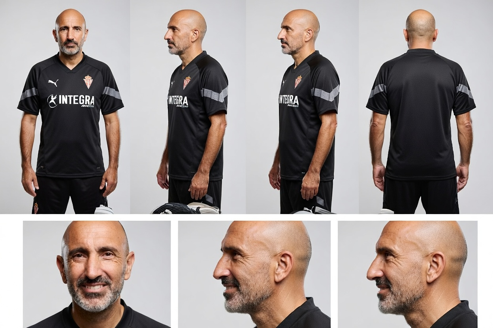
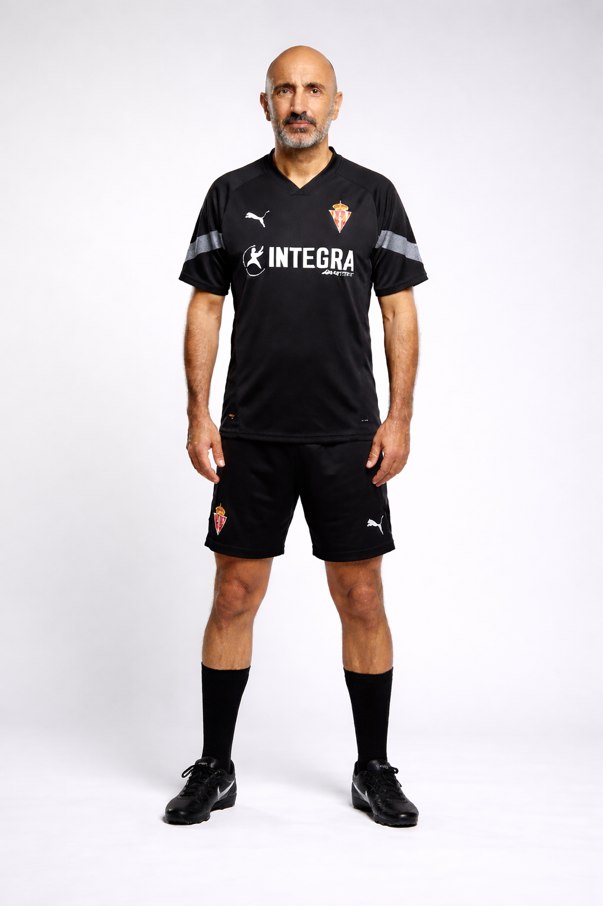

Abelardo
Guión
Si cierro los ojos, todavía puedo oler el césped mojado de Mareo. Para un guaje de Gijón, entrar en esa escuela es como entrar en la NASA. Yo no quería ser estrella, yo solo quería defender esa camiseta, la de mi ciudad. Debuté en el 89. Imagínate lo que era eso para mí... pasar de la grada a estar ahí abajo, con los grandes. Formamos un bloque duro, con Luis Sierra, con gente que sentía el escudo. Fueron años increíbles donde el Sporting tuteaba a cualquiera. Y aunque en el 94 tuve que irme al Barça porque el club necesitaba el dinero —y a nivel profesional era un salto necesario—, te digo una cosa: me llevé un trozo de El Molinón en la maleta. Nunca me fui del todo.
Pero si algo me marcó la vida, fue volver en 2014. El club estaba en la UVI, ¿sabes? Muerto económicamente, sin poder fichar a nadie, con una deuda que nos asfixiaba. Me dijeron: 'Pitu, te toca'. Y yo, pues adelante. ¿Qué íbamos a hacer? Miré a los ojos a esos chavales de la cantera... Meré, Jony, Sergio... y les dije que no teníamos dinero, pero que teníamos hambre. Aquella temporada fue una locura. Solo perdimos dos partidos. Y ese día en Sevilla, contra el Betis... estar pendientes de la radio, el gol del Lugo en el último minuto... cuando el árbitro pitó el final y supimos que éramos de Primera, lloré como un niño. No era solo un ascenso, era salvar la vida del Sporting. Esos guajes me hicieron el entrenador más orgulloso del mundo.
Después vino la permanencia. Otro milagro. Sin poder fichar, compitiendo contra trasatlánticos. Lo logramos contra el Villarreal en casa, con toda nuestra gente empujando. Ese es el Sporting que yo siento: el de la lucha, el de no rendirse nunca. Luego las cosas se torcieron. En 2017 sentí que el equipo necesitaba otro aire y preferí irme, renunciando a lo que me quedaba de contrato. ¿Cómo le voy a quitar un euro al club que me lo ha dado todo? Eso no va conmigo.
Y en 2022, otra vez el teléfono. El equipo se iba al pozo, a la Tercera categoría. Fue una situación jodida, de mucha tensión. Logramos salvar los muebles, pero el fútbol es así de caprichoso. La última etapa no salió como yo quería, y me dolió, no te voy a engañar. Salir de tu casa siempre escuece si no es con una victoria. Pero mira... me quedo con el cariño de la gente por la calle. Al final, los entrenadores y los jugadores pasamos, lo que queda es la institución y la afición. Yo solo soy un gijonés más que tuvo la suerte de defender su casa, primero con las botas puestas y luego desde el banquillo. Para mí, el Sporting no es un trabajo... es mi vida.
"Puxa Sporting, siempre."
Hoja de referencia

Personaje
